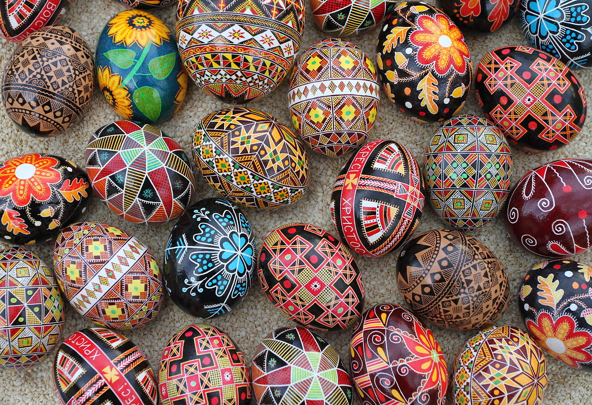
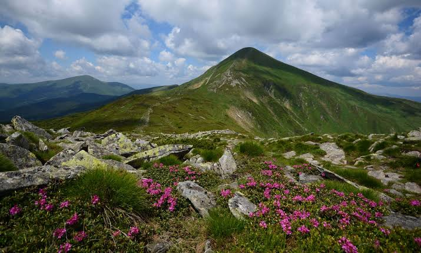
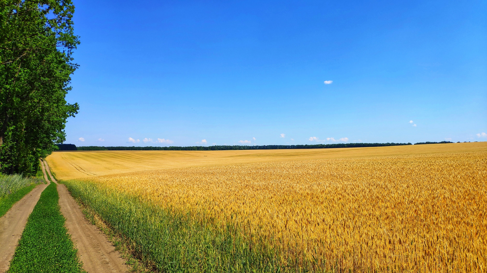
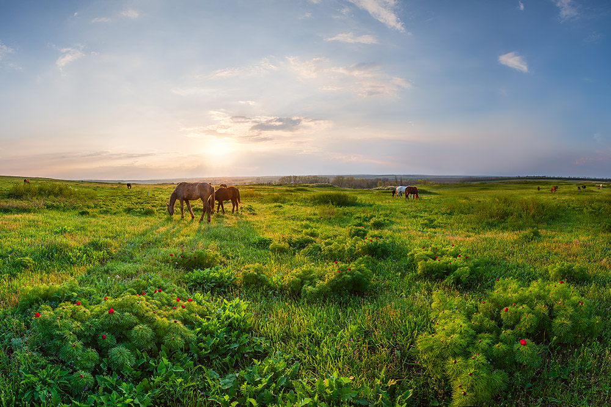

A Cultural Dossier · Self-Guided
Ukraine, Explored
From black soil and a thousand-year emblem to the spirits behind the stove and the fires lit at midsummer. Scroll down to start uncovering it, one block at a time.
Scroll ↓